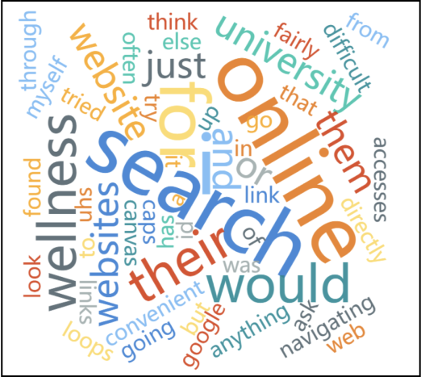
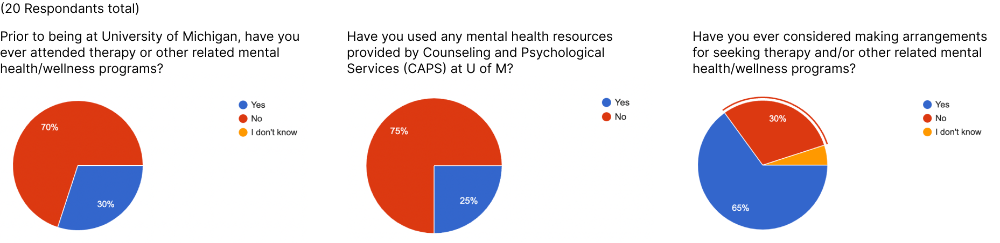
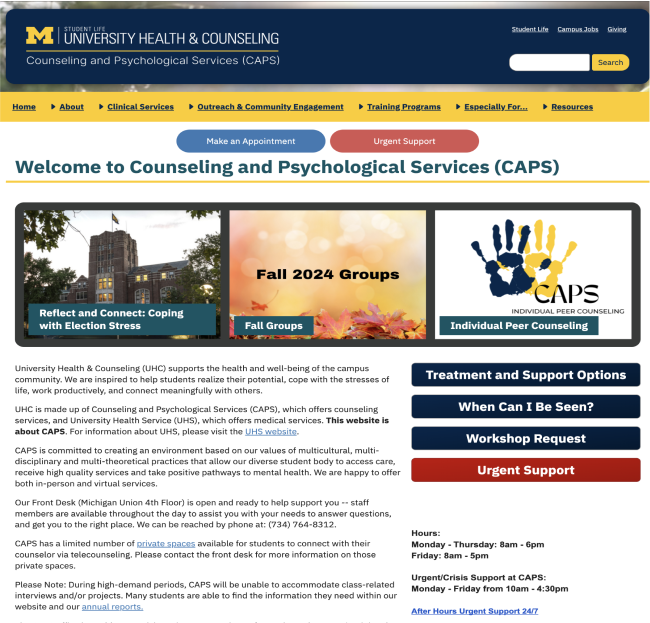
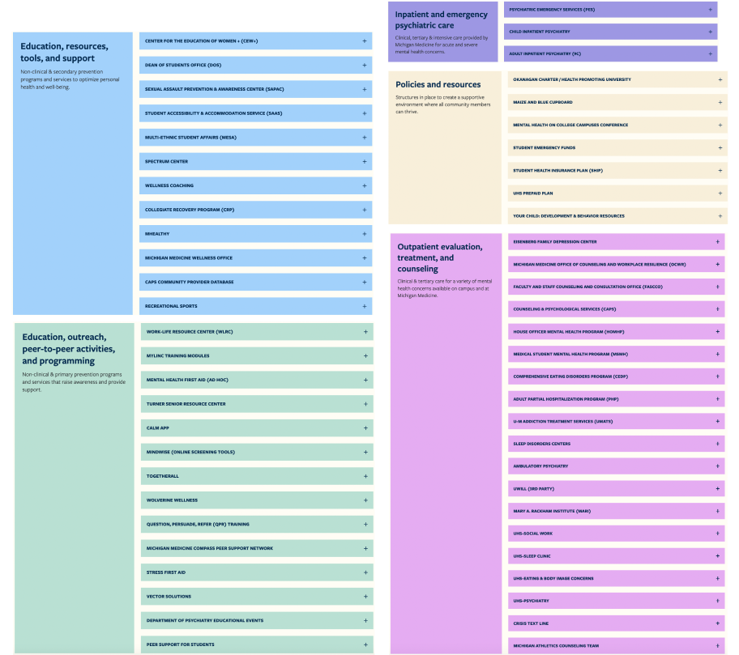

During the topic discovery stage of the project, we aim to find an interactive system for accessing and using public services or spaces that has space for improvement. To determine the specific interface for improvement, we used the following methods:
- Secondary research: We broadly searched for resources online for news articles, citizen complaints, and research reports.
- Preliminary ethnography: We used the service and asked questions to other users about the accessibility of the system.
Eventually, we determined the domain of interactive system to improve - Counseling and Psychological Services (CAPS) Service at U of M, a system that offers clinical services to students like mental health therapy free of cost. However, the current system can be a time-consuming and confusing process for students learning about and navigating the resources on campus, further demotivating students from securing the care that they need.
So we determined our initial research question as:
How might we improve U-M students' ability to navigate and access services provided by CAPS and other forms of mental health care on U-M campus?
Then, we carried out some exploratory research to know more about the target population and the interactive system that we are working on.
- Autoethnography: Each of us have experiences with accessing and engaging with CAPS.
- 3 expert interviews
- Dr Chris Frank, medical director of UHS (University Health Service)
- Joe Zichi, Well-Being Collective Lead
- Dr. James P. Dolan, Jr., Associate Director of Clinical Services
- 3 30-minute student interviews
- 20 Survey Responses from students - This anonymous survey asked students if they have had therapy or other mental health treatment in the past, if they have accessed U-M mental health resources in the past, and who did/would they get started.
- Multiple generative analyses - below are two samples of these:

Word Cloud from Survey Responses
Eventually, we derived 3 insights from the research:
- Students who have previously accessed therapy and other care for their mental health prior to attending the University of Michigan are the most attentive and engaged when it comes to accessing services for their mental health. Students may feel a “stigma surrounding mental health”.

Survey data of a few questions we asked
- The existing platforms to access UM mental health resources such as the websites CAPS and UHS are overwhelming for many users. Too many options to choose from.

CAPS Website Homepage

Well-Being Collective Continuum of Care Resources
- CAPS may be the resource most widely known about & recommended, but there are many other resources available on campus available depending for a student's specific needs and situation.